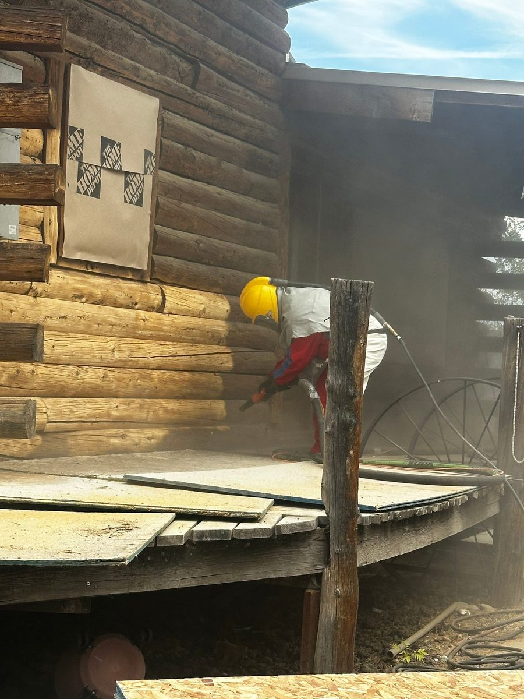

When the stain on a log home fails, the new finish is only as good as the surface under it. Stain bonds to clean, sound wood. It does not bond well to gray fibers, chalky old finish, or a half-stripped wall. So before any new stain goes on, the old finish has to come off. There are three common ways to do that: media blasting, sanding, and pressure washing. Here is how they compare, from a crew that strips and refinishes log homes across the Wood River Valley.

The short answer
For a whole house with a failed finish, log home media blasting is usually the most thorough and the most even. Sanding works for small areas and touch-ups. Pressure washing is a cleaning step, not a stripping method, and it is the one most likely to cause problems when it is used as a shortcut.
Media blasting (sandblasting)
Media blasting uses compressed air to push an abrasive media against the logs. It strips old stain, failed sealer, and the gray weathered layer back to clean wood. People use "media blasting" and "sandblasting" for the same thing.
- What it does well: it reaches into checks, notches, corners, and the round faces of logs, which are exactly the places sanding misses. The result is an even surface across the whole wall.
- What it leaves behind: a slightly textured surface. That texture is a good thing, because it helps new stain soak in instead of sitting on top.
- The catch: it takes real equipment and real prep. Windows, doors, and fixtures get covered first, and the crew works from scaffolding in supplied-air hoods. Pressure and media have to be set for wood, so the goal is removing the finish, not carving into the log.
Sanding
Sanding takes the finish off with an abrasive pad or disc, usually on a grinder or orbital sander.
- What it does well: small areas, spot repairs, and smoothing a log after a repair. It is precise, and it needs no special equipment.
- The catch: round logs are hard to sand evenly. A flat pad touches the high points and skips the low ones, and it cannot reach into checks, corners, or the notches where logs cross. On a whole house it is slow, and it tends to leave old finish behind in exactly the places water collects. Aggressive sanding can also leave swirl marks that show through a new stain.
Pressure washing
Pressure washing blasts the surface with water.
- What it does well: washing off dirt, pollen, mildew, and loose material before a maintenance coat goes on over a finish that is still sound.
- The catch: water alone does not strip a failed finish. Turned up high enough to try, it can raise and fuzz the wood grain, gouge soft wood, and drive water deep into the logs and checks. Logs then need time to dry out completely before any stain goes on, or the new finish traps moisture inside.
How the three compare
- Removes a failed finish completely: blasting, yes. Sanding, on flat areas only. Pressure washing, no.
- Reaches checks, corners, and notches: blasting, yes. Sanding, no. Pressure washing, partly.
- Adds water to the logs: blasting, no. Sanding, no. Pressure washing, yes.
- Best for: blasting for whole walls or a whole house. Sanding for spots and repairs. Pressure washing for cleaning before a maintenance coat.
Which one does your log home need?
It depends on the finish that is on the logs now.
- The finish is sound but dirty or faded: a gentle wash and a maintenance coat may be all it needs. No stripping required.
- A few walls have failed: often the south and west walls go first. Those walls can be stripped and refinished while the rest gets a maintenance coat. Our guide to the signs your log home needs re-staining covers how to tell.
- The finish has failed across the house, or you are switching to a stain that is not compatible with the old one: strip it all. Blasting is the most reliable way to get every wall back to the same clean starting point.
What happens after the logs are stripped
Bare logs should not sit unprotected through an Idaho season. Stripping is followed by any chinking repairs the joints need and a new stain and sealer, ideally within days. That is why we treat blasting, chinking, and staining as one job with one crew, from bare wood to finished walls.
Chase Construction media blasts, re-chinks, and re-stains log homes in Sun Valley, Ketchum, Hailey, and Bellevue. Call 208-897-8100 and we will tell you which method your logs actually need.